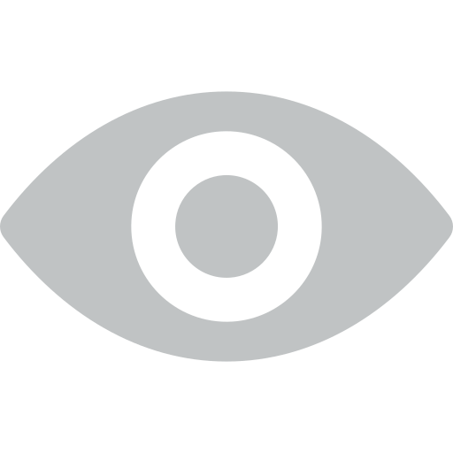

<div class="employee-dash">
	<div class="employee-dash__events">
		<div class="employee-dash__title">Мои события</div>

		<div class="employee-dash__events-item">
			<div ui-sref="responses({id: session._id})">Отклики и приглашения</div>
			<span ng-bind="vm.invites"></span>
		</div>

		<div class="employee-dash__events-item">
			<div ui-sref="responses({id: session._id})">Просмотры резюме</div>
			<span ng-bind="vm.watches"></span>
		</div>

		<div class="employee-dash__events-item">
			<div ui-sref="favourites">Избранные вакансии</div>
			<span ng-bind="vm.favourites"></span>
		</div>
		
	</div>
	<div class="employee-dash__cvs">
		<div class="employee-dash__cvs-head">
			<div class="employee-dash__title">Мои резюме</div>
			<div class="pagination" ng-if="vm.pages.length > 1">
				<div class="pagination__item" ng-click="vm.prevPage()"><</div>
				<div ng-class="{'active': vm.currentPage === (page + 1)}" class="pagination__item" ng-repeat="page in vm.pages track by $index" ng-bind="page+1" ng-click="vm.displayPage(page+1)"></div>
				<div class="pagination__item" ng-click="vm.nextPage()">></div>
			</div>
		</div>
		<div class="employee-dash__cv" ng-repeat="cv in vm.cvs">
			<div class="employee-dash__cv-head">
				<a class="link" ng-bind="cv.position" ui-sref="cv({id: cv._id})"></a>
			</div>
			<div class="employee-dash__cv-footer" ng-bind="'Создано ' + (cv.date | myDate)"></div>
		</div>
	</div>
</div>
